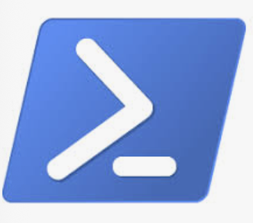
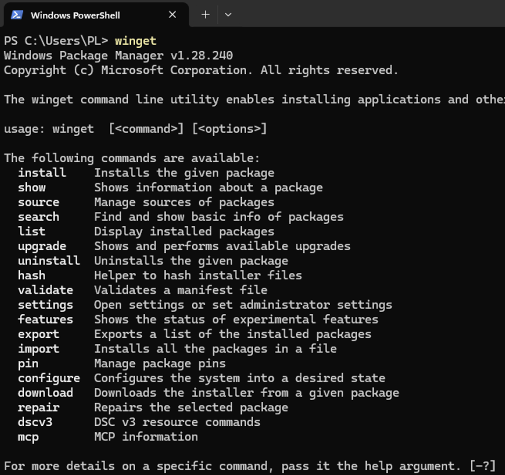
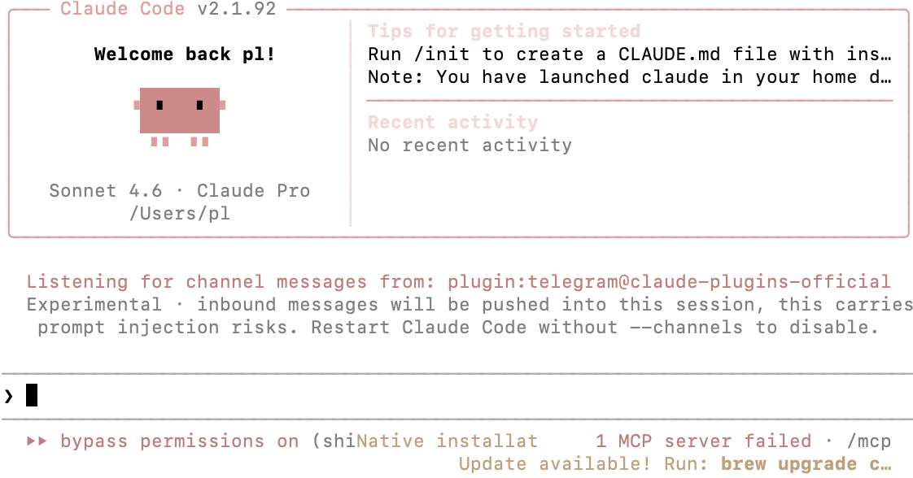
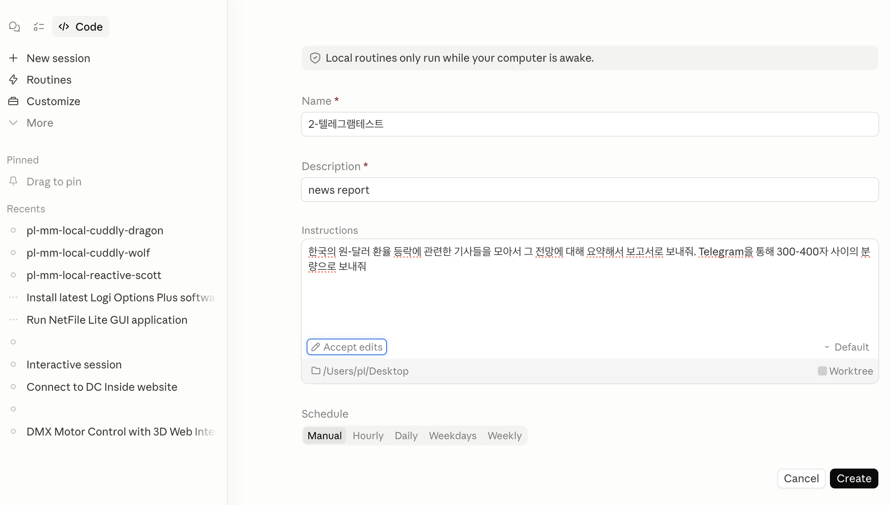
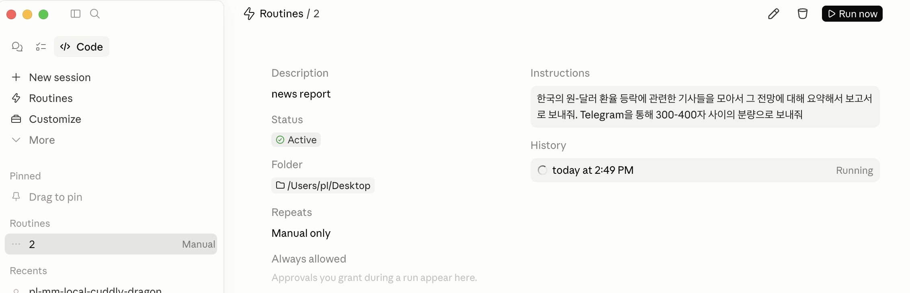
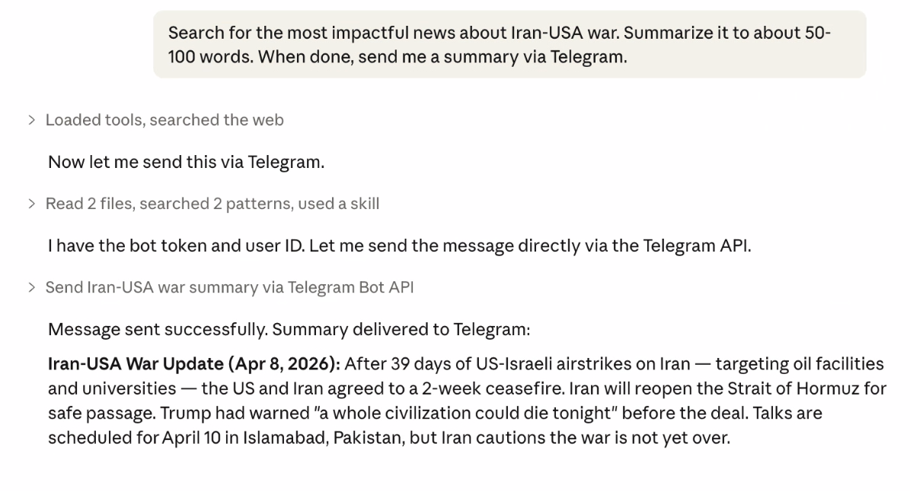

클로드 코드(CLI) — 텔레그램 Scheduled Task 연동 가이드
Downloads: https://drive.google.com/drive/folders/1zZUW_adtMrDyLiHLxS58M4PoSZDNDFIT?usp=sharing
따라만 하시면 항상 비서로서 대기-응답하거나, 정해진 시간에 자료 조사한 보고서를 보내주는 AI 비서를 만드실 수 있습니다.
1. 컴퓨터 기본 셋팅 부분
1. 가장 중요한 task: 클로드 기본 인스톨
본 문서의 설명은 모두 Windows OS 환경용입니다.
컴퓨터에 Google Chrome 설치 되어 있는지 확인 → 안되었으면 설치.
가장 먼저 할 것
클로드 데스크탑 인스톨:
https://claude.com/download 에서 윈도우용 다운 및 설치.
클로드 코드 CLI 인스톨:
이 부분이 중요합니다. Claude의 일부 고급 기능을 사용하려면 위에서 설치했던 클로드 Desktop(GUI 버전)이 아닌 Claude Code CLI (커맨드 라인 버전)이 필요한 경우가 있습니다.
윈도우의 'Powershell' 앱을 실행합니다. 윈도우 11 최신 버전인 컴퓨터를 추천 드립니다. 클린 인스톨된 것이 가장 좋습니다.

Powershell의 커맨드 라인에서 winget 이라고 입력하고 엔터를 눌러보면, winget이 실행되어야 합니다. winget을 찾을 수 없는 경우 powershell의 업데이트 등이 필요합니다. 이런 경우, 주변 사람의 도움을 받으시는 것을 추천드리고, 아예 AI 비서 구축이 목표시라면 윈도우 11을 새로 클린 인스톨 후 최신 버전으로 업데이트 하는 것을 추천합니다.

다음으로는 드린 자료에 포함되어 있는 install_tools.bat 을 관리자 권한의 powershell에서 실행합니다.
powershell을 관리자 권한으로 실행 후, 해당 bat 파일이 담겨있는 목표 폴더로 cd 후 (예를 들면 cd C:\Users\유저이름\Desktop) 해당 폴더로 들어가신 후 install_tools.bat 을 입력 후 엔터를 누르시면 됩니다.
claude code, git, bun 이 설치됩니다.
🤖 2. 텔레그램 봇 생성
- @BotFather 계정과 채팅을 시작합니다.
/newbot명령을 입력합니다.- 닉네임: 내가 가장 보기 편한 이름으로 설정합니다.
- 아이디: 남들과 달라야 하므로 중복되지 않을 법한 이름으로 설정합니다. 마지막은
_bot으로 끝나야 함. - 생성이 완료되면
t.me/claude132_bot와 같은 형식의 링크를 통해 해당 봇과 채팅창을 열 수 있습니다. (claude132는 단순 예시일 뿐이며 이 부분은 아이디마다 달라질 것입니다.)참고: 이 단계에서는 아직 아무런 반응이 없습니다.
💻 3. 클로드 코드(Claude Code) 플러그인 설정
터미널에서 claude를 실행한 후 다음 단계를 진행합니다. (powershell이나 terminal이 아닌 claude CLI 실행 후 실행해야 합니다.)
- 플러그인 설치
/plugin install telegram@claude-plugins-official - 플러그인 다시 불러오기
/reload-plugins - 종료:
Ctrl + C를 두 번 눌러서 터미널로 빠져나옵니다.
(4번은 claude가 아닌 terminal 또는 powershell 입니다.)
- 텔레그램 채널로 다시 실행
claude --channels plugin:telegram@claude-plugins-official --dangerously-skip-permissions
그러면 이와 같이 성공적으로 플러그인과 함께 실행된 모습을 볼 수 있습니다.

보통 배경은 어두운 색인 경우가 많은데, 색깔 다른 것은 신경쓰지 않으셔도 됩니다. 내용만 체크.
- 클로드에 명령 내려서 API 키 등록 (실행된 클로드 코드 내부에서 입력. 아까 받은 텔레그램 봇의 API 키입니다.)
save HTTP API key for Telegram and make it work <여기에API키붙여넣기>- 주의:
<>는 제외하고 API 키만 붙여넣으세요.<>안에 API 키가 있는 것이 아님. - Proceed 문구가 뜨면
yes를 누릅니다.
- 주의:
🔗 4. 최종 연결 및 실행 확인
준비가 완료되었습니다. Ctrl + C 두 번으로 클로드를 종료했다가 다시 실행합니다.
claude --channels plugin:telegram@claude-plugins-official실행 시 아래와 같은 메시지가 수신됩니다. 수신이 안 되시면 폰에서 텔레그램을 닫고 컴퓨터에서 텔레그램을 닫으시고, 둘 다 새로 실행해보면 좋습니다.
- 위와 같은 메시지를 클로드 코드에 그대로 입력하면 페어링(Pairing)이 완료됩니다.
- 두 번째 메시지는 페어링이 정상적으로 완료되어야만 나타납니다.
⚠️ 주의사항 및 결과
터미널 유지: 클로드 코드 CLI를 실행했던 터미널 또는 powershell은 항상 열려 있어야 합니다. 터미널을 닫으면 클로드 코드가 텔레그램 메시지에 응답할 수 없습니다. 이는 클로드 데스크탑으로 텔레그램을 이용하려고 할 때도 마찬가지입니다. 클로드 데스크탑은 열려있는 CLI를 통해 텔레그램을 이용합니다.
데스크탑 앱 연동: 클로드 데스크탑 앱에서 수행한 명령의 결과를 텔레그램으로 전송받으려 할 때도, 해당 telegram plugin이 활성화된 터미널 세션이 컴퓨터에서 계속 실행 중이어야 합니다.
보고서 예약 방법

클로드 데스크탑 GUI → Code 모드로 → 새로운 Routine 만들기 클릭 → 로컬(local) → 적절한 이름과 내용을 입력하시고 폴더 아이콘으로 적절한 로컬 폴더 선택 → Ask permissions을 accept edits 모드로 바꿈 → Schedule에서 적절한 반복 빈도 설정 → 만들기.
그 다음 실행.

최종 결과 예시 화면
클로드에서 정해진 시간에 정해진 명령이 실행됩니다.
초반에는 Claude의 해당 예약 세션 실행 화면을 지켜보시고, Always Allow(항상 승인)과 Allow(승인) 등을 완료될 때까지 몇 번 눌러주셔야 합니다. 한번 해놓으면 다음 반복 실행 때는 필요치 않습니다.
잘 되지 않을 경우 이미 실행 중인 Telegram bot API를 이용하라고 명시해주시거나, 현재 Claude Code CLI가 Telegram plugin과 함께 실행 중이라는 사실을 알려주셔도 도움이 됩니다. 마지막으로는 CLI가 아닌 Claude Desktop GUI에 대화하듯이 API 키를 알려주시는 것도 시도해 볼 수 있습니다.

텔레그램 화면